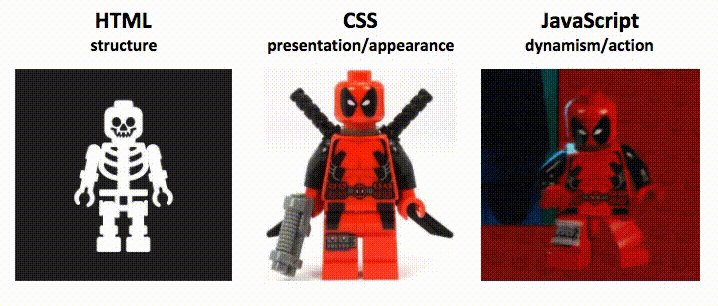

HTML: HyperText Markup Language, it is not a programming language, no if statements, no loops
CSS: Cascading style sheet, it used for existing web elements, it will not work without HTML
JavaScript: JS gives actual dynamisim, functionality to HTML and CSS

What is WebElement, Tags, Attribute, Value?
WebElements: Everything we see on a web page, links, pictures, texts, inputBoxes, radio buttons, checkboxes
Tags: They are like contaniers, whatever you put in them, they will be displayed accordingly
What are common tags that you will deal with as a Tester?
Why are we learning HTML?
Selenium library works on HTML, we need Selenium to automate HTML pages.
We need to apply CSS to make our div element apart from other webelements in the page. CSS goes to opening tag.